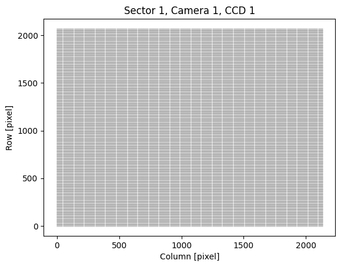
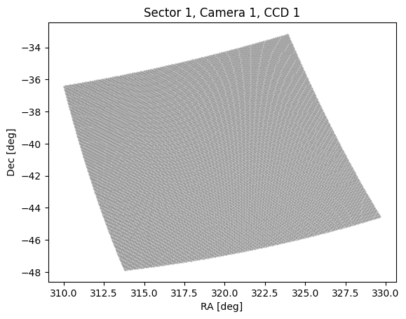
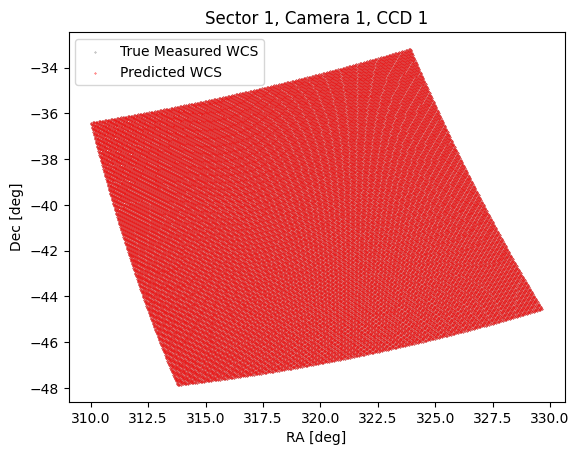
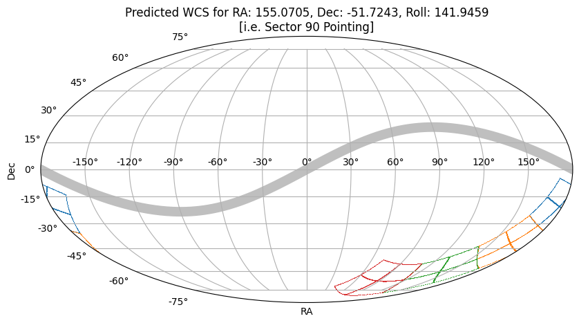

How to use tesswcs
The tesswcs package is designed to help users:
- Obtain the true World Coordinate System for TESS (Transiting Exoplanet Survey Satellite) data that is archived.
- Predict the World Coordinate System for TESS Cameras and CCDs based on an RA (Right Ascension), Dec (Declination), and Roll pointing of the boresight.
In this tutorial, we show how to work with the tesswcs package to get pointing information for the telescope.
A brief recap on WCS
The World Coordinate System (WCS) is a standard in astronomy for representing coordinates of celestial objects. It's a system that maps the pixels of an image to real-world coordinates (like RA and Dec in the sky). This is crucial for understanding where exactly an astronomical image is pointing. WCS information in this case will enable us to understand which targets will fall on TESS pixels for any given pointing of the spacecraft.
WCS information is typically stored in the header of FITS (Flexible Image Transport System) files, a common file format used in astronomy. The WCS headers contain the necessary parameters to translate between pixel coordinates in the image and sky coordinates.
A brief recap on astropy.wcs.WCS
astropy.wcs.WCS is a class provided by the Astropy package, a powerful tool for astronomy data analysis and handling in Python. The WCS class in Astropy is used to handle the World Coordinate System information of FITS files.
This class can parse the WCS information from FITS headers and provide a simple interface to convert between pixel coordinates and sky coordinates. Some common operations using astropy.wcs.WCS include:
- Converting pixel coordinates to celestial coordinates and vice versa.
- Handling different types of projections and coordinate transformations.
- Dealing with distortions present in the data.
What is new in tesswcs.WCS?
tesswcs provides you with a "subclass" of astropy.wcs.WCS. As such, the tesswcs.WCS class provides the same functionality as astropy.wcs.WCS, including working with WCS objects and storing them as fits files. The tesswcs.WCS has new methods and attributes, which enables you to do the following;
New class methods
To create the WCS for tess you can use one of two class methods. To obtain the true WCS from an archived dataset, you can use
To predict a WCS based on a boresight RA, Dec and Roll, you can use
New class attributes
If you initialize a tesswcs.WCS class object
you can access the RA, Dec, and Roll of the boresight pointing of TESS using class attributes, e.g.
will returnand you can access the camera and CCD number
will returnIn the case of pointing information on archived TESS data, you can also access the sector, e.g.
will returnHow do I use it?
Below we show a tutorial on how to work with the tesswcs.WCS class.
from tesswcs import WCS
import numpy as np
import matplotlib.pyplot as plt
import astropy.units as u
First, to load a WCS from TESS data that has already been archived, we can use the from_archive method:
If we print wcs, can see the key parameters of the WCS
WCS Keywords
Number of WCS axes: 2
CTYPE : 'RA---TAN-SIP' 'DEC--TAN-SIP'
CRVAL : 319.40344268202983 -41.281972194879756
CRPIX : 1045.0 1001.0
PC1_1 PC1_2 : 0.005481380474769502 -0.001728607226633
PC2_1 PC2_2 : 0.001590229789019981 0.005438735789549773
CDELT : 1.0 1.0
NAXIS : 2078 2136
Remember, the tesswcs.WCS has special attributes, the ra, dec, and roll attributes show the properties of the boresight.
(352.6844, -64.8531, 222.1532)
To show that tesswcs is able to accurately predict the WCS of a TESS camera and CCD given the boresight RA, Dec, and Roll, let's create a predicted WCS. To predict a WCS we use the predict method, and pass an RA, Dec and Roll.
WCS Keywords
Number of WCS axes: 2
CTYPE : 'RA---TAN-SIP' 'DEC--TAN-SIP'
CRVAL : 319.40931664794107 -41.2748366984738
CRPIX : 1046.1403996643921 1002.0036834114205
PC1_1 PC1_2 : -0.0054812525828552925 0.0017288395822421384
PC2_1 PC2_2 : 0.0015904886653827649 0.005438761744971495
CDELT : -1.0 1.0
NAXIS : 2078 2136
You can see the predicted WCS has slightly different properties, (e.g. the predicted WCS uses a different origin in pixel space).
Let's compare the world coordinates that would be given by pixels on the detector in each case.
# Build a pixel grid, note we include collateral pixels
R, C = np.meshgrid(
np.arange(0, 2078, 10), np.arange(0, 2136, 10), indexing="ij"
)
Below we plot the pixel grid
fig, ax = plt.subplots()
ax.scatter(C, R, s=0.1, color='grey', label='True Measured WCS')
ax.set(xlabel='Column [pixel]', ylabel='Row [pixel]', title="Sector 1, Camera 1, CCD 1")
[Text(0.5, 0, 'Column [pixel]'),
Text(0, 0.5, 'Row [pixel]'),
Text(0.5, 1.0, 'Sector 1, Camera 1, CCD 1')]

Since WCS is a subclass of astropy.wcs.WCS we can use the pixel_to_world method
c now contains the sky coordinates for those pixel positions. Let's plot them.
fig, ax = plt.subplots()
ax.scatter(c.ra.deg, c.dec.deg, s=0.1, color='grey', label='True Measured WCS')
ax.set(xlabel='RA [deg]', ylabel='Dec [deg]', title="Sector 1, Camera 1, CCD 1")
[Text(0.5, 0, 'RA [deg]'),
Text(0, 0.5, 'Dec [deg]'),
Text(0.5, 1.0, 'Sector 1, Camera 1, CCD 1')]

Looks great. Now we can plot the predicted coordinates for the same RA, Dec, and Roll as sector 1.
fig, ax = plt.subplots()
ax.scatter(c.ra.deg, c.dec.deg, s=0.1, color='grey', label='True Measured WCS')
ax.scatter(c_predicted.ra.deg, c_predicted.dec.deg, s=0.1, color='red', label='Predicted WCS')
ax.legend()
ax.set(xlabel='RA [deg]', ylabel='Dec [deg]', title="Sector 1, Camera 1, CCD 1")
[Text(0.5, 0, 'RA [deg]'),
Text(0, 0.5, 'Dec [deg]'),
Text(0.5, 1.0, 'Sector 1, Camera 1, CCD 1')]

These look very close! Let's look at the separation between the truth and the prediction as a function of pixel position.
fig, ax = plt.subplots()
im = ax.pcolormesh(C, R, sep.value)
cbar = plt.colorbar(im, ax=ax)
cbar.set_label("True TESS WCS - Predicted WCS [arcsecond]")
ax.set(xlabel='Column [pixel]', ylabel='Row [pixel]', title="Sector 1, Camera 1, CCD 1");

Given that a TESS pixel is 21 arcseconds across, the prediction is within a tenth of a pixel across the detector!
The tesswcs.WCS.predict method is generally accurate to a fraction of a pixel.
Creating new WCS based on pointing information
Some TESS sectors have not yet been observed, and therefore there is no WCS data archived for those sectors. In these cases, we can predict the WCS based on the RA, Dec and Roll for the upcoming sectors.
tesswcs stores the pointing data for all TESS sectors in the pointings variable, to make this easier.
Below we show how to predict the WCS for a future TESS pointing from the upcoming Cycle 7.
# We will need to use astropy units for plotting
import astropy.units as u
# The `footprint` function is a convenience function to obtain the edges of the CCD
from tesswcs.utils import footprint
# We will also create an ecliptic plane vector for plotting purposes
from astropy.coordinates import SkyCoord
ecliptic_plane = SkyCoord(np.arange(0, 360, 1), np.arange(0, 360, 1)*0, unit='deg', frame='geocentricmeanecliptic').transform_to('icrs')
First we get the pointing data for a sector in cycle 7
| Cycle | Sector | RA | Dec | Roll | Start | End |
|---|---|---|---|---|---|---|
| int64 | int64 | float64 | float64 | float64 | float64 | float64 |
| 7 | 90 | 155.0705 | -51.7243 | 141.9459 | 2460746.5 | 2460774.5 |
We only need RA, Dec, and Roll
# Boresight RA, Dec, and Roll
ra, dec, roll = np.asarray(pointings[pointings['Sector'] == sector][['RA', 'Dec', 'Roll']])[0]
We can obtain the predicted WCS for this roll for any camera and CCD using the following
Below we show a short script to plot the edges of each CCD in this sector in a Mollweide projection
# Set up plot parameters
fig = plt.figure(figsize=(10, 5))
ax = fig.add_subplot(111, projection="mollweide")
ax.grid(True)
ax.set(
title=f"Predicted WCS for RA: {ra}, Dec: {dec}, Roll: {roll}\n[i.e. Sector {sector} Pointing]",
xlabel="RA",
ylabel="Dec",
)
# Plot the ecliptic plane
s = np.argsort(ecliptic_plane.ra.wrap_at(180 * u.deg).rad)
plt.plot(ecliptic_plane.ra.wrap_at(180 * u.deg).rad[s], ecliptic_plane.dec.rad[s], color='grey', zorder=-10, alpha=0.5, lw=10)
# iterate over camera, CCD
for camera in np.arange(1, 5):
for ccd in np.arange(1, 5):
# predict the WCS
wcs = WCS.predict(ra, dec, roll, camera=camera, ccd=ccd)
# create world coordinates from a pixel footprint
c = wcs.pixel_to_world(*footprint().T)
# Plot each camera/CCD
ax.scatter(
c.ra.wrap_at(180 * u.deg).rad,
c.dec.rad,
lw=0.5,
s=0.1,
c=f"C{camera - 1}",
)

Creating a WCS based on an RA, Dec, and Roll
Sometimes we may want to obtain a WCS for a theoretical pointing of the spacecraft. To do so you can easily add your own boresight RA, Dec, and Roll. Below I show the same proceedure as above for a random pointing.
# Set up plot parameters
fig = plt.figure(figsize=(10, 5))
ax = fig.add_subplot(111, projection="mollweide")
ax.grid(True)
ax.set(
title=f"Predicted WCS for RA: {ra}, Dec: {dec}, Roll: {roll}",
xlabel="RA",
ylabel="Dec",
)
# Plot the ecliptic plane
s = np.argsort(ecliptic_plane.ra.wrap_at(180 * u.deg).rad)
plt.plot(ecliptic_plane.ra.wrap_at(180 * u.deg).rad[s], ecliptic_plane.dec.rad[s], color='grey', zorder=-10, alpha=0.5, lw=10)
# iterate over camera, CCD
for camera in np.arange(1, 5):
for ccd in np.arange(1, 5):
# predict the WCS
wcs = WCS.predict(ra, dec, roll, camera=camera, ccd=ccd)
# create world coordinates from a pixel footprint
c = wcs.pixel_to_world(*footprint().T)
# Plot each camera/CCD
ax.scatter(
c.ra.wrap_at(180 * u.deg).rad,
c.dec.rad,
lw=0.5,
s=0.1,
c=f"C{camera - 1}",
)

Using the WCS Object to find if objects are observable in TESS
Now that we have a WCS will want to use it. The key use case of WCS is a way to convert between sky positions of targets, and pixel positions on the detector.
Let's take a look at an exoplanet target. First we obtain the coordinates as an astropy.coordinates.SkyCoord object, using the from_name class method.
<SkyCoord (ICRS): (ra, dec) in deg
(330.79488644, 18.88431928)>
Now that we have the coordinate that we want, let's see if it is observable in Cycle 6. First we need to know what sectors were taken during cycle 6.
array([70, 71, 72, 73, 74, 75, 76, 77, 78, 79, 80, 81, 82, 83])
Using the pointings table we can see it's sectors 70 through 83.
We can now build the WCS for TESS each of those sectors. For each camera and CCD, we use the footprint_contains method to check if the target is contained within the CCD.
observable = []
for sector in sectors:
ra, dec, roll = pointings[sector - 1][['RA', 'Dec', 'Roll']]
for camera in np.arange(1, 5):
for ccd in np.arange(1, 5):
# predict the WCS
wcs = WCS.predict(ra, dec, roll, camera=camera, ccd=ccd)
# check if the target falls inside the CCD
if wcs.footprint_contains(c_targ):
print(f"Target Observable in Sector {sector}, Camera {camera}, CCD {ccd}")
Target Observable in Sector 82, Camera 1, CCD 1
It looks like the target is observable in sector 82! Let's find out what pixel the target will fall on
sector = 82
ra, dec, roll = pointings[sector - 1][['RA', 'Dec', 'Roll']]
wcs = WCS.predict(ra, dec, roll, camera=1, ccd=1)
(array(506.32115277), array(454.32962391))
It looks like this target will fall on row 506, column 454. Keep in mind, this includes collateral pixels! You can read more about collateral pixels on TESS CCDs here.